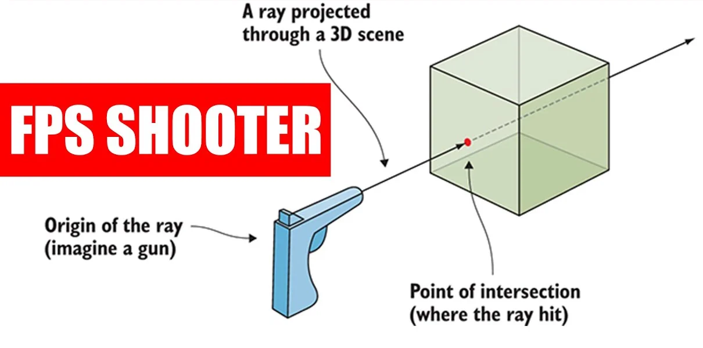
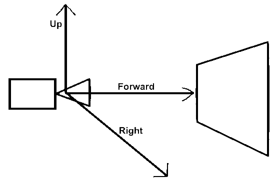

.webp)
R-2 : Setup, Raytracer Output
Setting up the project, writing our first pixels, and building the core utility types: Vector3, Color and Ray.
Part 2, Setting Up
You'll need an IDE, I'm using Rider. We'll write the image to a .ppm file, so you might need a plugin to view it ("Simple PPM Viewer") or just open it in VS Code, or use a converter.
Side note : The .ppm format describes the type (we'll use P3), the image resolution, and each pixel's color as 3 ints from 0 to 255.
This is the expected result of Book 1 :
Start a new project and write a basic color output to a .ppm file with a loop :
Raytracing.cpp
#include <iostream>
using namespace std;
int main(int argc, char* argv[])
{
// Resolution
int width = 256, height = 256;
// Image
cout << "P3\n" << width << ' ' << height << "\n255\n";
for(int y = 0; y < height; y++)
{
for (int x = 0; x < width; x++)
{
double w = double(x) / (width - 1); // % of width
double h = double(y) / (height - 1); // % of height
// Back into ints from 0 to 255
int r = static_cast<int>(255.999 * w);
int g = static_cast<int>(255.999 * h);
int b = 255 - r;
cout << r << ' ' << g << ' ' << b << '\n';
}
}
return 0;
}To output this to a file, open the terminal and type :
Terminal
.\x64\Debug\RayTracing.exe > Render.ppmUtilities, Vector3
Let's do some maths (yay!), first, a simple Vector3 class :
Vector3.h
#pragma once
#include <cmath>
#include <iostream>
class Vector3
{
public:
double x, y, z;
Vector3(): x(0), y(0), z(0){}
Vector3(double pX, double pY, double pZ) : x(pX), y(pY), z(pZ){}
Vector3 operator-() const { return Vector3(-x, -y, -z); }
double operator[](int i) const { return i == 0 ? x : (i == 1 ? y : z); }
double& operator[](int i) { return i == 0 ? x : (i == 1 ? y : z); }
Vector3& operator+=(const Vector3& rVec)
{
x += rVec.x; y += rVec.y; z += rVec.z;
return *this;
}
Vector3& operator*=(double t)
{
x *= t; y *= t; z *= t;
return *this;
}
Vector3& operator/=(double t)
{
x /= t; y /= t; z /= t;
return *this;
}
double Length() const { return sqrt(SquaredLength()); }
double SquaredLength() const { return x*x + y*y + z*z; }
};Add free operators after the class declaration :
Vector3.h
...
// Alias for Vector3 to increase code readability
using Position = Vector3;
inline std::ostream& operator<<(std::ostream& rOut, const Vector3& rV)
{
return rOut << rV.x << ' ' << rV.y << ' ' << rV.z << std::endl;
}
inline Vector3 operator+(const Vector3& rLeft, const Vector3& rRight)
{
return Vector3(rLeft.x + rRight.x, rLeft.y + rRight.y, rLeft.z + rRight.z);
}
inline Vector3 operator-(const Vector3& rLeft, const Vector3& rRight)
{
return Vector3(rLeft.x - rRight.x, rLeft.y - rRight.y, rLeft.z - rRight.z);
}
inline Vector3 operator*(const Vector3& rLeft, const Vector3& rRight)
{
return Vector3(rLeft.x * rRight.x, rLeft.y * rRight.y, rLeft.z * rRight.z);
}
inline Vector3 operator*(const Vector3& rLeft, double scalar)
{
return Vector3(rLeft.x * scalar, rLeft.y * scalar, rLeft.z * scalar);
}
inline Vector3 operator*(double scalar, const Vector3& rRight)
{
return rRight * scalar;
}
inline Vector3 operator/(Vector3 vector, double scalar)
{
return (1/scalar) * vector;
}
inline double Dot(const Vector3& rLeft, const Vector3 rRight)
{
return rLeft.x * rRight.x + rLeft.y * rRight.y + rLeft.z * rRight.z;
}
inline Vector3 Cross(const Vector3& rLeft, const Vector3& rRight)
{
return Vector3(rLeft.y * rRight.z - rLeft.z * rRight.y,
rLeft.z * rRight.x - rLeft.x * rRight.z,
rLeft.x * rRight.y - rLeft.y * rRight.x);
}
inline Vector3 Unit(Vector3 vector)
{
return vector / vector.Length();
}Add a color utility file. (Note: Color is not a class, it's an alias used for readability.)
Color.h
#pragma once
#include "Vector3.h"
// New Vector3 alias for color
using Color = Vector3;
inline void WriteColor(std::ostream& rOut, Color pixel)
{
// Write the translated [0,255] value of each color component.
rOut << static_cast<int>(255.999 * pixel.x) << ' '
<< static_cast<int>(255.999 * pixel.y) << ' '
<< static_cast<int>(255.999 * pixel.z) << '\n';
}Clean up main and add progress logs. (Don't forget to #include "Color.h")
Raytracing.cpp
...
// Image
for(int y = 0; y < height; y++)
{
clog << "Progress : " << (y*100/height) << " % \n" << flush;
for (int x = 0; x < width; x++)
{
Color pixel(double(x) / (width-1),
double(y) / (height-1),
1 - (double(x) / (width-1)));
WriteColor(cout, pixel);
}
}
clog << "Done! You can open your file now :3 \n";
return 0;
}The Ray Class
Rays, like vectors, have an origin and a direction. We can visualize them as a laser shot from a pen to whatever it hits first. That means it could go, in theory, forever into space, and we can know the distance at which the laser hit something (time of travel of light from origin to the hit point).

Now we make the Ray class :
Ray.h
#pragma once
#include "Vector3.h"
class Ray
{
private:
Position mOrigin;
Vector3 mDirection;
public:
Ray(){}
Ray(const Position& from, const Vector3& towards) : mOrigin(from), mDirection(towards){}
Position GetOrigin() const { return mOrigin; }
Vector3 GetDirection() const { return mDirection; }
Position At(double time) const
{
return mOrigin + time * mDirection;
}
};Firing the Rays
The steps to shoot rays through pixels are :
- Calculate the ray from the camera to the pixel.
- Determine which object the ray intersects.
- Compute a color for the intersection closest to the camera.
We use a 16:9 resolution to avoid axis confusion and prepare for non-square outputs :
Raytracing.cpp
int main(int argc, char* argv[])
{
// Resolution
double resolution = 16.0/9.0;
int width = 400, height = static_cast<int>(width / resolution);
if(height < 1) height = 1;
// Viewport
double viewportHeight = 2;
double viewportWidth = viewportHeight * (static_cast<double>(width)/height);
// Image
...Camera Center
Place the camera at (0, 0, 0) with x going right, y going up, and negative z going forward.

Because we build the image from top-left to bottom-right, we invert the Y axis :
Raytracing.cpp
// Viewport
double viewportHeight = 2;
double viewportWidth = viewportHeight * (static_cast<double>(width)/height);
double focalLength = 1;
Position cameraCenter = Position(0, 0, 0);
Vector3 viewportX = Vector3(viewportWidth, 0, 0);
Vector3 viewportY = Vector3(0, -viewportHeight, 0); // We invert Y
// Delta vector between pixels
Vector3 pixelDeltaX = viewportX / width;
Vector3 pixelDeltaY = viewportY / height;
// Position of the top-left pixel
Vector3 viewportOrigin = cameraCenter - Vector3(0, 0, focalLength)
- viewportX / 2 - viewportY / 2;
Vector3 originPixelLocation = viewportOrigin + 0.5 * (pixelDeltaX + pixelDeltaY);Add a stub RayColor function before main that returns black for now :
Raytracing.cpp
Color RayColor(const Ray& rRay)
{
return Color(0, 0, 0);
}
int main(int argc, char* argv[])
{
// Resolution
...Coloring Pixels
Raytracing.cpp
...
for (int y = 0; y < height; y++) {
clog << "Progress : " << (y * 100 / height) << " %\n" << flush;
for (int x = 0; x < width; x++) {
Vector3 pixelCenter = originPixelLocation + (x * pixelDeltaX) + (y * pixelDeltaY);
Vector3 rayDirection = pixelCenter - cameraCenter;
Ray ray(cameraCenter, rayDirection);
Color pixelColor = RayColor(ray);
WriteColor(std::cout, pixelColor);
}
}
clog << "Done! :3 \n";
return 0;
}Fill in RayColor with a simple white-to-blue gradient along the Y axis using linear interpolation :
Raytracing.cpp
Color RayColor(const Ray& rRay)
{
Vector3 unitDirection = Unit(rRay.GetDirection());
double blue = 0.5 * (unitDirection.y + 1.0);
return (1.0 - blue) * Color(1.0, 1.0, 1.0) + blue * Color(0, 0, 1.0);
}Build your file and take a peek. Onward & Upwards!